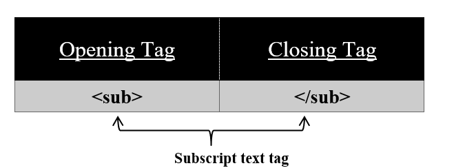

For subscript text use <sub> tag on your HTML page.
Syntax:
<sub>
//content
</sub>
Using this <sub> tag we can display our text beneath the other text with half of its height. All the content in between this tag appears to be displayed beneath that text. <sub> tag has also its corresponding </sub> tag. This tag is used in science naming elements, compounds, etc. For eg, The molecular formula for water is H 2O.
To show 2 beneath H in HTML we use the <sub> tag for that.